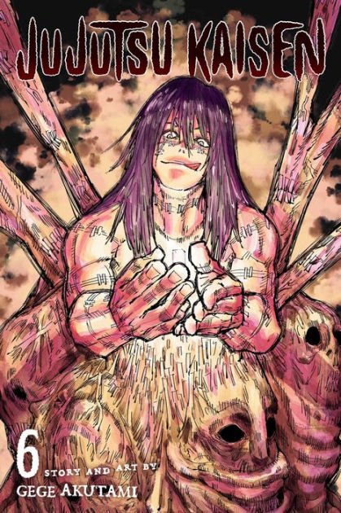
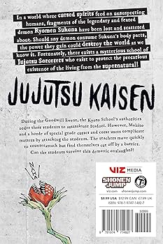

Characters: Mahito and his Transfigured Humans
Theme:Beige / deadly
Vibe: Dangerous
Click the book to flip it.
During the Goodwill Event, the Kyoto School's authorities order their students to assassinate Itadori. However, Mahito and a horde of special grade curses and curse users complicate matters by attacking the students. The teachers move quickly to counterattack but find themselves cut off by a barrier. Can the students survive this demonic onslaught?!
Amazon, Barnes & Noble, local bookstores, or libraries.
Kyoto Sister School Team Battle